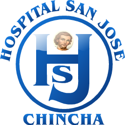

Analisis Comparativo del Desempeno de la Provincia de CHINCHA - Region Ica
Dashboard comparativo del desempeno de la provincia de CHINCHA frente a ICA, PISCO, PALPA y NAZCA.
Comparacion detallada del desempeno de CHINCHA con cada provincia.
| Provincia | Estab. | Avance % | Estado |
|---|
Analisis de los distritos de CHINCHA vs distritos de otras provincias.
| Distrito | Provincia | Estab. | Avance % | Estado |
|---|
Listado completo de establecimientos de CHINCHA con su desempeno.
| # | Establecimiento | Distrito | Avance % | Indic. | Estado |
|---|
Comparacion de indicadores de CHINCHA vs promedio regional.
| Ind | Indicador | Tipo | Cumplimiento % | Estado |
|---|
Acciones prioritarias para mejorar el desempeno de CHINCHA.